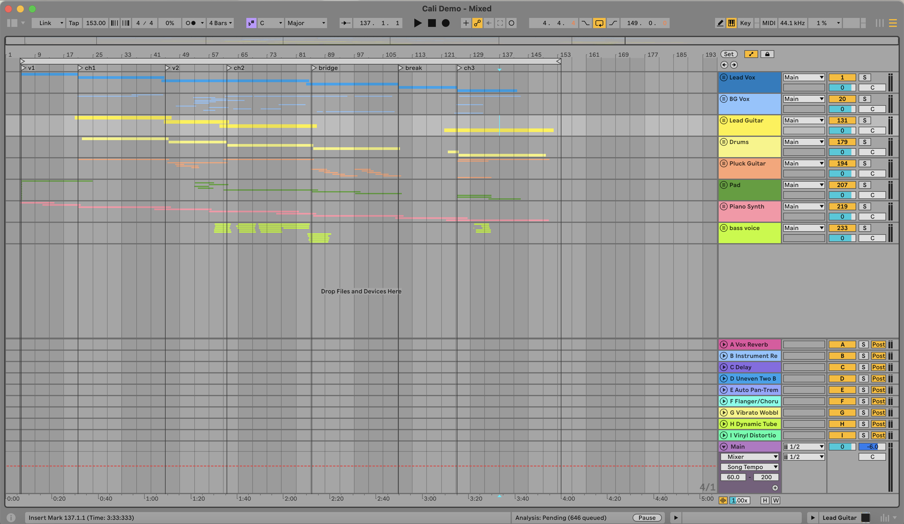

Written: March 16, 2025
Genre: Indie
Vibe: String quartet
Favorite Line: "It's abusive // Hidden under every smile // Is a world resigned // To a burning desire"

My DAW for Ruthless!
I first came up with this idea in my hometown mall, most specifically, the JC Penney, my favorite clothing store. It was spring break and I was going through a pretty complicated time emotionally. I found myself confused a lot of the time and wondering where to turn. But one day, in the mall, something caught my eye—a skirt with rose patterns. It made me really happy and for the first time in a long time I didn’t question anything—I just knew there was something about it that made me so sure about myself. Then, right next to it, I spotted a skirt with lemon patterns. The more I looked around, the more I saw lemon and rose patterned clothing. It was truly a joy. I walked out of the store and into a decoration shop and there were more lemons and rose-themed things! It was like a dream sequence of seeing those fresh classic things that make you remember you are human. I started thinking about my childhood again, and one of my favorite Disney movies, Beauty & the Beast. I came up with a line on the way home: “Is that you? Sitting under lemon trees at 17 // Heaven ain’t heavenly // If it hasn’t got you.” As soon as I got home, I sat at the piano and got to work straightaway.
I played around with melodies until I found one that really made me feel the lyrics. Before I knew it, rhymes started to develop, and the poetry took shape. I had a lot of alternative versions of the chorus and by the end I had to narrow them down for what was most natural to pronounce and what made the most sense for the song. I imagined it to be three stages of falling for someone or something: first, you imagine them but they aren’t there, second, they are physically there in front of you and you try to make sense of it, and third, the point where you have been around them long enough to know them but they are still occupying your mind when they are gone. I decided since this was a more poetic feel, I wasn’t going to repeat any lines except for “Is that you?”, “Is it useless?”, and “This love is ruthless.” I went to bed that night with most of it written except for the bridge, and found that I couldn’t sleep. I tossed and turned until 4 AM when I finally snuck downstairs to my basement keyboard and came up with the bridge, the part about philosophers and libraries. I went on a run later that afternoon and sat on the park swings humming it to myself and decided to change a few lines, and as I watched the neighborhood kids play basketball, I knew the lyrics were done.
I recorded most of the demo in my school’s practice room on the piano. I took my equipment there and propped the mic on the piano to record some chords and shimmery accompaniment. Then, I went back to my room and recorded some raw vocals and added some sounds. That Spring, I was lucky enough to study abroad in Vienna and decided to re-record my vocals/add background vocals and ask my friend, William, to play the cello over the track. We recorded that in half an hour and then got hot pot at Happy Lamb. When I got home from dinner, I mixed it and sent it over to Sunny.